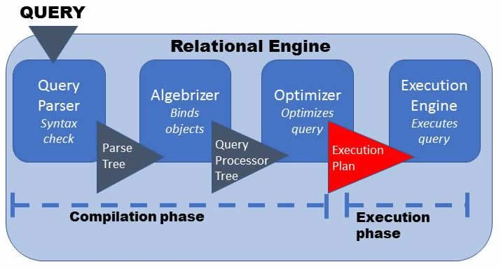
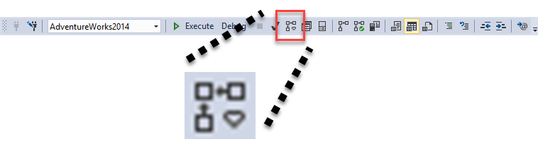
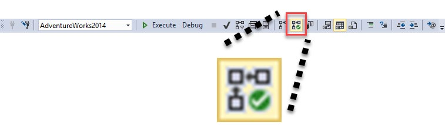
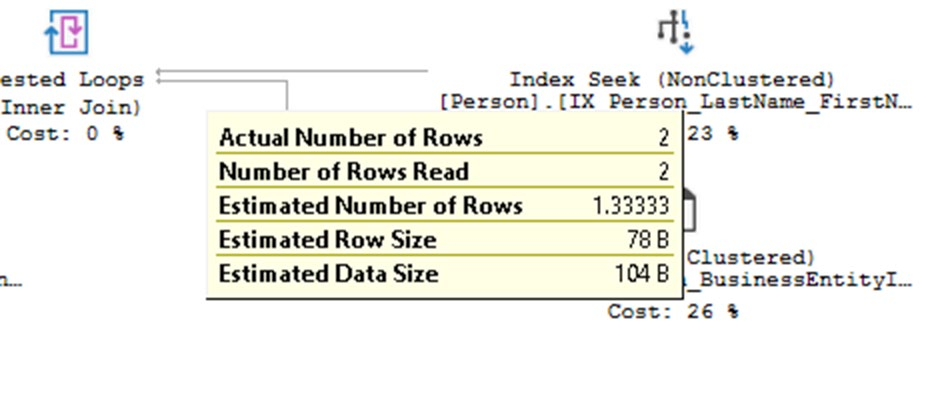
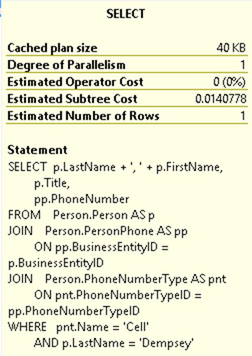

✦ The 60-second version
If you only remember five things from this chapter, remember these.
- An execution plan is a set of instructions the Query Optimizer writes so the database engine knows exactly how to fetch the data your query asked for.
- SQL Server takes your SQL text through parsing → binding → optimization → execution. You describe what you want; the optimizer decides how to get it.
- The optimizer is a cost accountant: it tries many candidate plans, gives each an estimated CPU + I/O cost, and picks the cheapest one it can find in a reasonable time. Cheapest is driven by statistics.
- Finished plans go into the plan cache. If the same query comes back, SQL Server reuses the plan and skips compilation. Parameterize your queries to make that happen.
- A plan can be viewed as XML, text or graphical. Graphical is the most readable. "Estimated" vs "actual" is not two different plans — it is the same plan, shown with or without runtime data.
1 What happens when you submit a query
Every query travels through the relational engine in fixed stages. The first three are "compilation", the last one is "execution".
SELETC instead of SELECT? It stops here and returns an error. Output: a parse tree.
Parsing, in plain words
Binding, in plain words
Person.Person exists;
Product.Person does not, so compilation stops with "invalid object name".
Optimization
The optimizer receives three inputs:
| Input | What it tells the optimizer |
|---|---|
| Query processor tree | The logical shape of the query, plus the tables and indexes involved. |
| Statistics | How much data there is and how it is distributed. |
| Constraints | Primary keys, foreign keys and other rules that limit what data can exist. |
With those in hand it swaps the logical tree for a physical plan made of operators — one for reading an index, one for each join flavour (Nested Loops, Hash Match, Merge, Adaptive Join), ones for sorting, aggregating, computing values, and so on. It then scores candidate plans by estimated cost and takes the lowest.
Trivial plans
Very simple single-table queries can skip full cost-based optimization and get a trivial plan instead. Listing 1-1 is the book's example:
SELECT d.Name
FROM HumanResources.Department AS d
WHERE d.DepartmentID = 42;
This query also qualifies for auto-parameterization: the hard-coded
42 is replaced by a parameter when the plan is cached, so another
query with a different ID can reuse the same plan.
CREATE TABLE has only one sensible way to
happen. ALTER TABLE … ADD CONSTRAINT does get optimized.
Execution — and recompiles
The execution engine follows the plan it was given. But it may throw the plan away and ask
for a new one if the plan turns out to be invalid — for example the underlying table
changed, or statistics were refreshed. A whole batch is compiled at once, even branches
behind IF that never run; if one statement's plan goes stale,
only that statement is recompiled.
New in SQL Server 2017: interleaved execution for multi-statement table-valued functions. The optimizer pauses mid-way, runs the function's subtree to learn the real row count, then optimizes the rest of the query with that number.
2 Working with the optimizer
In C# you write the steps. In T-SQL you write only the result you want — and someone else chooses the steps.
The optimizer, not you, decides how a query runs. Your job is to write efficient, set-based SQL that describes the required data as succinctly as possible. Beyond that, a developer or DBA has two practical levers to help the optimizer:
- Keep statistics accurate and up to date.
- Encourage plan reuse rather than constant recompilation.
3 Why statistics decide everything
The quality of the plan is capped by the quality of the statistics behind it.
The optimizer cannot read your whole table for every plan it tries. Instead it uses statistics: aggregated samples that stand in for the full data set. The estimated cost of a plan rests mostly on cardinality estimation — how many rows are in the table, and how many of them will survive each filter or join.
Statistics come in three parts:
| Part | What it holds |
|---|---|
| Header | General metadata about this statistics object. |
| Density graph | How unique / selective the data is. |
| Histogram | Counts of value occurrences, built from up to 200 sample points chosen to represent the table. |
The key number is selectivity: the fraction of rows that pass the filter. Selectivity 1.0 (100%) is the worst case — every row passes. Cardinality is just selectivity × input rows.
4 The plan cache and plan reuse
Compiling is expensive work. Compiling the same query twice is wasteful work.
A simple query compiles in under a millisecond; a complex one can take seconds or even minutes. So SQL Server keeps finished plans in memory — the plan cache — and reuses them whenever it can.
Plan aging
Each plan carries an age = estimated compile cost × number of times it has been used.
A plan costing 10 to compile and used 5 times has age 50. The internal
lazywriter process periodically decrements every age by one, and
when memory is tight the lowest-age plans are evicted first. The intent: keep the plans
that are expensive to build and used often.
Clearing the cache on purpose
-- Everything, all databases. Never casually in production:
DBCC FREEPROCCACHE;
-- Just one plan, using a handle from a DMV (e.g. sys.dm_exec_query_stats) or Query Store:
DBCC FREEPROCCACHE(0x0500...plan handle...);
-- One database (undocumented, older method):
DBCC FLUSHPROCINDB(DB_ID('AdventureWorks2014'));
-- One database, documented, SQL Server 2016+:
ALTER DATABASE SCOPED CONFIGURATION CLEAR PROCEDURE_CACHE;When is a plan actually reusable?
The algebrizer assigns each query a QueryHash. For a match, all four of these must line up:
- the QueryHash matches (with a detailed comparison of the SQL text, right down to spaces and carriage returns — hash collisions are possible in theory),
- the SQL text matches exactly,
- the SET options used to create the plan match,
- the database ID matches.
Unqualified object names (no dbo. / schema prefix) can also produce
separate plans for different users.
Parameterize to avoid churn
Listing 1-2 joins three AdventureWorks tables and filters on a literal:
SELECT p.ProductID ,
p.Name AS ProductName ,
pi.Shelf ,
l.Name AS LocationName
FROM Production.Product p
INNER JOIN Production.ProductInventory AS pi
ON pi.ProductID = p.ProductID
INNER JOIN Production.Location AS l
ON l.LocationID = pi.LocationID
WHERE l.Name = 'Paint';
GO'Tool Cribs' and you get a second cached plan, even though the two queries are logically the same and share a QueryHash.The fix: the same query with a parameter instead of a literal.
-- Declare a parameter, so the SQL text is "set in stone"
DECLARE @LocationName nvarchar(50) = N'Paint';
SELECT p.ProductID ,
p.Name AS ProductName ,
pi.Shelf ,
l.Name AS LocationName
FROM Production.Product p
INNER JOIN Production.ProductInventory AS pi
ON pi.ProductID = p.ProductID
INNER JOIN Production.Location AS l
ON l.LocationID = pi.LocationID
WHERE l.Name = @LocationName;
GO
-- Same idea from application code / dynamic SQL: sp_executesql
EXEC sys.sp_executesql
N'SELECT ... WHERE l.Name = @LocationName;',
N'@LocationName nvarchar(50)',
@LocationName = N'Tool Cribs';What causes a recompile
- Structure changes to a referenced table, view or function
- An index used by the query changed or dropped
- Statistics used by the query updated
sp_recompilecalled on the object- DDL and DML mixed in a single batch
- Certain
SEToptions changed in the batch - Cursor options changed in the query
- Deferred compiles
- Remote rowset changes, e.g. through
OPENQUERY
5 Execution plan formats
Same plan, three ways to look at it. Pick based on what you need to do.
| Format | How to get it | Best for |
|---|---|---|
| XML | SET SHOWPLAN_XML ON (estimated) · SET STATISTICS XML ON (actual) |
Sharing with other DBAs. Queryable with XQuery. Not human-readable at a glance. |
| Text | SET SHOWPLAN_ALL ON · SET STATISTICS PROFILE ON · SET SHOWPLAN_TEXT ON |
Searching in an editor. Deprecated by Microsoft — the book recommends avoiding it. |
| Graphical | SSMS toolbar buttons / Ctrl+L, Ctrl+M | Actually reading plans. Fast to grasp; detail lives in tooltips and Properties. |
-- Estimated (does not run the query)
SET SHOWPLAN_XML ON; -- full XML plan
SET SHOWPLAN_ALL ON; -- text plan
-- Actual (runs the query, adds runtime info)
SET STATISTICS XML ON;
SET STATISTICS PROFILE ON;
-- Turn them back off when you're finished
SET SHOWPLAN_XML OFF;Permissions you need
sysadmin, dbcreator or
db_owner already have access. For everyone else, grant
SHOWPLAN in the specific database (Listing 1-3). Querying DMVs
additionally needs VIEW SERVER STATE or
VIEW DATABASE STATE.
GRANT SHOWPLAN TO [username];6 Estimated vs actual plans
The chapter's biggest myth-buster: they are not two different plans.
So can they ever differ?
Essentially no. There is one valid plan per query at any moment. If an estimated plan and a later actual plan look different, something invalidated the cached plan in between — data or schema changes, statistics updates, mix of DDL and DML — forcing a recompile.
Two genuine exceptions:
- Parallelism. The optimizer may produce a parallel plan, but at runtime the engine can strip the parallelism and run serially if resources are scarce. The plan wasn't changed; the execution shape was.
- The estimated plan simply cannot be produced. Listing 1-4 creates a temp table in the same batch and selects from it. Requesting the estimated plan fails, because the query is never executed and the table never exists. At runtime it works fine.
CREATE TABLE TempTable
(
Id INT IDENTITY(1, 1) ,
Dsc NVARCHAR(50)
);
INSERT INTO TempTable
( Dsc )
SELECT [Name]
FROM [Sales].[Store];
SELECT *
FROM TempTable;
DROP TABLE TempTable;Msg 208, Level 16, State 1, Line 7 · Invalid object name 'TempTable'.
The statement is marked for deferred name resolution, so it is excluded from compilation
until it actually runs.
7 Capturing your first plan
Two toolbar buttons and one keyboard shortcut are all you need.

- Right-click in the query window → same options in the context menu.
- Menu bar → Query → same options.
- Keyboard:
Ctrl+Lestimated,Ctrl+Mactual (in Visual Studio:Ctrl+Alt+L/Ctrl+Alt+M). - Estimated plans must be requested every time. The actual plan button is an on/off switch per query window.

sys.dm_exec_query_statistics_xml (DMV in SQL Server 2014, graphical view in 2016). Covered in Chapter 17.Open a new query window and run Listing 1-5:
USE AdventureWorks2014;
GO
SELECT p.LastName + ', ' + p.FirstName,
p.Title,
pp.PhoneNumber
FROM Person.Person AS p
INNER JOIN Person.PersonPhone AS pp
ON pp.BusinessEntityID = p.BusinessEntityID
INNER JOIN Person.PhoneNumberType AS pnt
ON pnt.PhoneNumberTypeID = pp.PhoneNumberTypeID
WHERE pnt.Name = 'Cell'
AND p.LastName = 'Dempsey';
GO
8 The parts of a graphical plan
Read right to left to follow the data; read left to right to follow the calls.
Most people start on the right, where data is read from tables and indexes, then follow the arrows left toward the SELECT operator, which hands rows to the client. Reading left to right is equally valid: that is the order in which operators call their children — data is pulled, not pushed.
Operators
Icons are the workhorses. Each implements one algorithm. Every operator has a physical side (how it is done) and a logical side (what it does) — e.g. Nested Loops (Inner Join).


LastName + ', ' + FirstName), then joins PersonPhone and PhoneNumberType, ending at SELECT.The SELECT operator is special: it reports on the plan as a whole, while every other operator reports only on itself.
Data flow arrows
Arrow thickness = amount of data. A fat arrow on the right fading to a thin arrow on the left means "we processed a lot to return very little" — sometimes unavoidable, often an optimization opportunity. Hover an arrow for its exact row count. In an actual plan the thickness uses actual row counts.

Estimated operator costs
The percentage under each icon is that operator's estimated cost relative to the whole plan. These are abstract "cost units" from the optimizer's CPU and I/O math — not real seconds. They correlate with real cost, but they are still estimates. A 0% operator still has a small non-zero cost (visible in Properties). All values come from the optimizer, so costs are identical in estimated and actual plans.

Operator properties
Right-click an icon → Properties. Pin the Properties window open while you read plans; this is where nearly all the useful information lives. Properties differ per operator type.

| Property | Meaning |
|---|---|
| Actual Number of Rows | True rows returned at runtime. Only exists in actual plans — and it is the single most useful number in the window. |
| Estimated Number of Rows | What statistics predicted. Compare it with the actual figure. |
| Estimated Operator Cost | The operator's cost, as a number and a percentage. Still an estimate even in an actual plan. |
| Object | The table or index being touched. |
| Predicate | The search condition pushed down into this operator. |
| Output List / Defined Values | Columns returned, and expressions computed here. |
| Table Cardinality | Number of rows in the table. |
Tooltips
Hover an icon or arrow for a pop-up that is a cut-down Properties window — fast, but incomplete, and it varies between SQL Server versions. For anything serious, use the Properties pane.

Saving a plan
Right-click the plan → Save Execution Plan As…. The .sqlplan
file is just XML. Since SQL Server 2008 the file type is preselected (in 2005 you had to type
the extension yourself). Saving a plan is the standard way to hand a slow query to a
colleague — they open the file in SSMS and see your exact graphical plan.
-- A .sqlplan file is XML. Load one and pull out the physical operators used.
DECLARE @plan xml = N'<ShowPlanXML ...>...</ShowPlanXML>'; -- or read from file / DMV
WITH XMLNAMESPACES ('http://schemas.microsoft.com/sqlserver/2004/07/showplan' AS p)
SELECT RelOp.value('@PhysicalOp', 'varchar(100)') AS PhysicalOp ,
RelOp.value('@LogicalOp', 'varchar(100)') AS LogicalOp ,
RelOp.value('@EstimatedTotalSubtreeCost', 'float') AS SubtreeCost
FROM @plan.nodes('//p:RelOp') AS T(RelOp);★ Key takeaways
- The plan is the truth. When a query is slow, stop guessing from the T-SQL and look at the plan.
- You write "what", the optimizer writes "how". Write set-based SQL and let it choose the algorithm.
- Statistics drive plan quality. Stale or missing stats mean bad cardinality estimates, and bad plans follow.
- Reuse is cheap, recompiling is not. Use stored procedures or parameters; consider Optimize for Ad Hoc Workloads.
- Estimated ≠ wrong. The estimated plan simply has no runtime data; costs are estimates in both.
- Compare estimated vs actual rows. The gap is your fastest diagnostic signal.
- Save as .sqlplan to share. It is portable XML that anyone with SSMS can open.